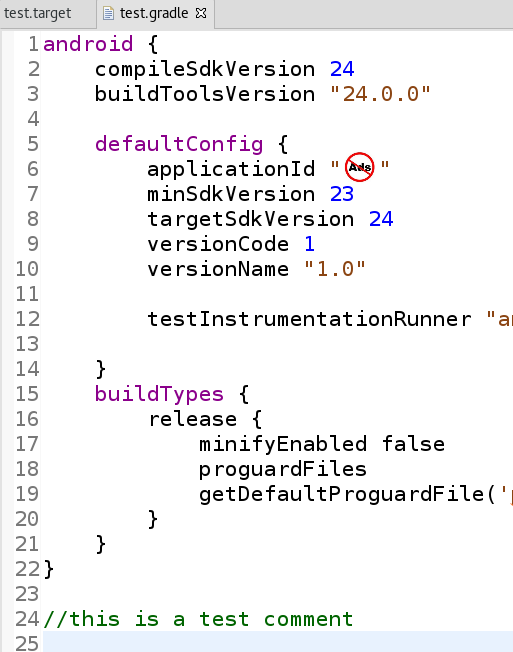

Instructions
The title should be short and snappy, written in sentence case, and using "headlinese" (compressed style). The title should not use trailing punctuation and a unique id attribute on the <tr> HTML element (id is all-lowercase and hyphen-separated).
In the news description, tell users about changes they'll see in the UI. Tell component writers about changes they'll see at the client- and server-side APIs. Try to generate some excitement; save the boring details for the manual; be short and don't repeat yourself. The description should be complete sentences, with trailing punctuation.
Make the entry self-contained and mention API classes. Do not link to bugs and don't promote individuals or third-party products.
Use active voice (say "you", not "the user"), and follow other advice in the Topic Content section of the Eclipse Doc Style Guidelines.
Stick to the default font and size. Make command names (Quick Fix), keyboard shortcuts (Ctrl+1), and preference page paths (Preferences > General > Keys) bold.
Do not enclose the first paragraph of an item in <p></p> tags.
See entries in published news documents for correct examples. These published news entries have been already reviewed, while entries in the evolving document may still contain errors.
The Windows Snipping Tool actually saves to PNG on Windows 7 and can easily be used to crop and save screenshots:
- Arrange the windows for the shot
- Use the Windows Snipping Tool to capture part of the screen
- Use File > Save As to save the screenshot as a PNG
- Overlays such as red circles or boxes to call out details can be done using Microsoft Paint
Name the file in a way that is appropriate and specific to the item (e.g., key-bindings.png, rather than something generic like image.png). Use all lowercase letters in the image file name, including the ".png" file extension. As a separator, use hyphen "-" rather than underscore "_".
Put all the images in a sibling directory named "images".
This gives XHTML like:
<img src="images/foo-view.png" alt=""/>
Include a suitable alt attribute.
The alt text should be empty ("") if the image just illustrates the text.
Only use the alt text to add information that is not accessible if the page is rendered without images.
Don't write alt="Screenshot of the XY dialog". Blind users shouldn't have to skip useless repetitions.
If the alt attribute text cannot sufficiently replace the image contents
(e.g. for a screenshot that shows source code), then enclose the img element in a link
to a plain ".txt" file with the same name as the image:
<a href="images/foo-view.txt"><img ...
The images should be left-justified (as opposed to centered). Do not embed the width and height of the image.

Before:

After:

Note: Due to Bug 466075, this new setting may be overriden by other plug-ins. For example, currently the Eclipse Git plug-in overrides this setting.
Before:

After:

- Chromium (/usr/bin/chromium-browser)
- Epiphany/Gnome Web (/usr/bin/epiphany)
- Konqueror (/usr/bin/konqueror)

This change has been synchronized with the Eclipse Git team provider, so Git will use the same label.
Old style:

New style (see the reduced space below the Quick Access box).


The Sleak and Spy views are now available in a new plug-in, org.eclipse.swt.tools.spies. They were previously part as org.eclipse.swt.tools which depends on JDT. With the new spies plug-in, it is now possible to use the spies without depending on JDT. This makes it especially suitable for inclusion in target definitions and Eclipse RCP applications.
SWT now stores the GTK theme used at launch time in a system property, org.eclipse.swt.internal.gtk.theme. This property can help with troubleshooting issues that are specific to certain themes. It can be viewed in Window > Installation Details > Configuration.
Now you can also cycle through the list, by keep pressing Ctrl+E, or arrow up/down.
The command dialog is dark theme friendly and easily extensible, to be reused internally.


java.lang.Object
in the Quick Outline (Ctrl+O) by using the new filter:


Preferences > Java > Debug


Currently the default Eclipse renderers do not use these new elements.
SelectionListener interface in SWT was enhanced to provide the
SelectionListener.widgetSelectedAdapter and the
SelectionListener.widgetDefaultSelectedAdapter static helper methods to create lambda style listeners.
Example for adding a selection listener to a button:
import static org.eclipse.swt.events.SelectionListener.widgetSelectedAdapter;
// ....
Button button = new Button(parent, SWT.PUSH);
button.addSelectionListener(widgetSelectedAdapter( e-> {System.out.print("Hello");}));

The following example shows how to contribute features to the generic editor via extensions:
<extension point="org.eclipse.ui.genericeditor.contentAssistProcessors">
<contentAssistProcessor
class="org.eclipse.ui.genericeditor.examples.dotproject.NaturesAndProjectsContentAssistProcessor"
contentType="org.eclipse.ui.genericeditor.examples.dotproject">
</contentAssistProcessor>
</extension>
<extension point="org.eclipse.ui.genericeditor.hoverProviders">
<hoverProvider
class="org.eclipse.ui.genericeditor.examples.dotproject.NatureLabelHoverProvider"
contentType="org.eclipse.ui.genericeditor.examples.dotproject"
id="natureLabelHoverProvider">
</hoverProvider>
</extension>
<extension point="org.eclipse.ui.genericeditor.presentationReconcilers">
<presentationReconciler
class="org.eclipse.ui.genericeditor.examples.dotproject.BlueTagsPresentationReconciler"
contentType="org.eclipse.ui.genericeditor.examples.dotproject">
</presentationReconciler>
</extension>
Those new extension points receive as arguments regular Platform classes (IPresentationReconcilier, ITextHover, ICompletionProposalComputer) to add behavior to the generic editor. No new Java API is necessary.
Here is a simple example of adding some minimal Gradle syntax highlighting support:
public class GradlePR extends PresentationReconciler {
private IToken quoteToken = new Token(new TextAttribute(new Color(Display.getCurrent(), new RGB(139, 69, 19))));
private IToken numberToken = new Token(new TextAttribute(new Color(Display.getCurrent(), new RGB(0, 0, 255))));
private IToken commentToken = new Token(new TextAttribute(new Color(Display.getCurrent(), new RGB(0, 100, 0))));
public GradlePR() {
RuleBasedScanner scanner = new RuleBasedScanner();
IRule[] rules = new IRule[5];
rules[0] = new SingleLineRule("'", "'", quoteToken);
rules[1] = new SingleLineRule("\"","\"", quoteToken);
rules[2] = new PatternRule("//", null, commentToken, (char)0, true);
rules[3] = new NumberRule(numberToken);
rules[4] = new GradleWordRule();
scanner.setRules(rules);
DefaultDamagerRepairer dr = new DefaultDamagerRepairer(scanner);
this.setDamager(dr, IDocument.DEFAULT_CONTENT_TYPE);
this.setRepairer(dr, IDocument.DEFAULT_CONTENT_TYPE);
}
}

org.eclipse.ui.editors can now receive a new editorContentTypeBinding
child element which allows to define binding of an existing editor for an existing content-type.
Here is an example:
<extension point="org.eclipse.ui.editors">
<editorContentTypeBinding
contentTypeId="org.eclipse.ui.genericeditor.examples.dotproject"
editorId="org.eclipse.ui.genericeditor.GenericEditor">
</editorContentTypeBinding>
</extension>
If your tests are organized in a JUnit-4-style test suite using the
@RunWith(Suite.class)
annotation, you can just replace that line by
@RunWith(TracingSuite.class)
This will log the start of each atomic test contained in the suite to System.out, and it will try to collect more information
after a timeout (stack traces, screenshot). And it will even try to throw an exception in the main thread,
so that other tests can proceed. See the Javadoc for configuration options.
org.eclipse.ui.views extension.

Example usage:
public class SampleView extends ViewPart {
@Inject IWorkbench workbench;
private TableViewer viewer;
@Override
public void createPartControl(Composite parent) {
viewer = new TableViewer(parent, SWT.MULTI | SWT.H_SCROLL | SWT.V_SCROLL);
viewer.setContentProvider(ArrayContentProvider.getInstance());
viewer.setInput(new String[] { "One", "Two", "Three" });
viewer.setLabelProvider(new ViewLabelProvider());
// Create the help context id for the viewer's control
workbench.getHelpSystem().setHelp(viewer.getControl(), "test7.viewer");
}
// more stuff
}